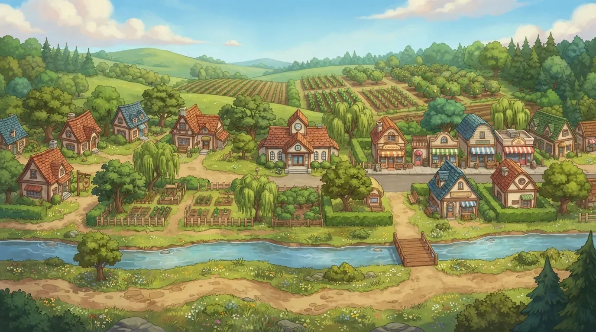

Una decisión del pueblo. Quince maneras de hacer oír tu voz.
Conoce el proyecto
Ayúdanos a probar este juego
Creado por Ali Keyvanfar, Ph.D.
Un proyecto personal de educación pública, inspirado en investigación de construcción en Kennesaw State University. Las ilustraciones y las voces se crearon con ayuda de herramientas de IA.
Constructores de comunidad de Pecan Grove es un juego gratis y bilingüe para niños de 8 a 14 años, que se juega con un adulto en bibliotecas públicas. Los niños viven en un pueblo inventado de Georgia que está decidiendo sobre un centro de datos, y practican 15 habilidades cívicas: notar cambios, hacer buenas preguntas, escuchar, revisar datos, opinar con respeto y planear juntos. El juego nunca toma partido.
Ayúdanos a hacer este juego más claro, amable y fácil de jugar. Tus comentarios guían nuestras próximas mejoras.
Deja comentarios cuando quieras con la pestaña Reseña / Comentarios.
Instrucciones de la prueba
Antes de llevarlo a las familias, queremos encontrar cada lugar donde alguien que juega por primera vez se pierde.
- Juega por lo menos tres paradas. Empieza con la Parada 1 y luego elige otras en el mapa del pueblo.
- Si puedes, pruébalo también en un teléfono, y cambia a English si lees inglés.
- El juego lee en voz alta sus frases principales: sube el volumen o usa audífonos. El botón de la bocina, arriba, apaga la voz.
- Fíjate dónde dudaste, qué no pudiste entender y cualquier cosa que no funcionó.
- Usa Reseña / Comentarios en cualquier escena. Tu borrador se guarda mientras escribes; puedes dejar la ventana flotante o mostrarla debajo del juego.
Tu avance se queda en este navegador. No necesitas cuenta ni nombre para jugar.
Comentarios de la prueba
Cuéntanos lo que notas mientras juegas. Puedes dejar una nota para cada parada.
Jugador anónimo: Iniciando…
Actividad actual: Mapa del pueblo / comentarios generales
Tus comentarios se guardan en este dispositivo y se copian automáticamente al Drive del equipo de la prueba mientras juegas. La copia incluye tu nota, la parada elegida, el idioma, el avance del juego y un código anónimo de jugador. No hace falta dar tu nombre ni tus datos de contacto.
Tu borrador se guarda mientras escribes. El estado de la copia aparecerá aquí.
Notas guardadas en este dispositivo
- Tus comentarios guardados aparecerán aquí.
Build: 6e6515230e34